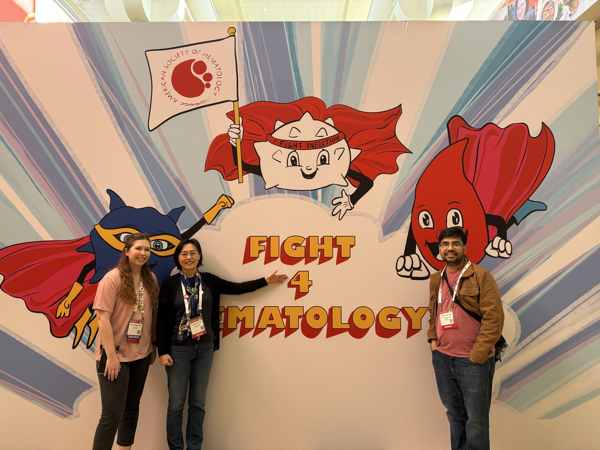
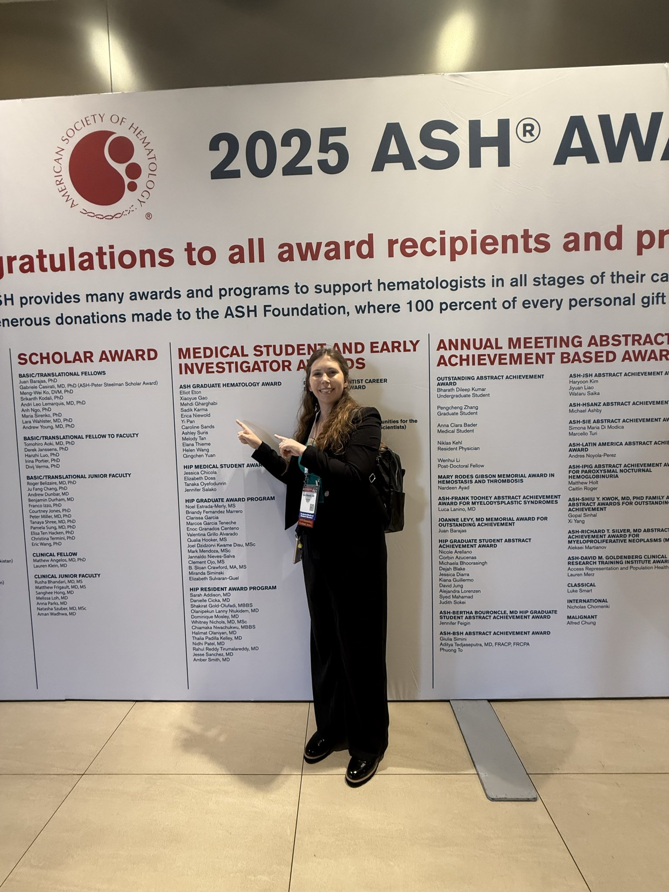
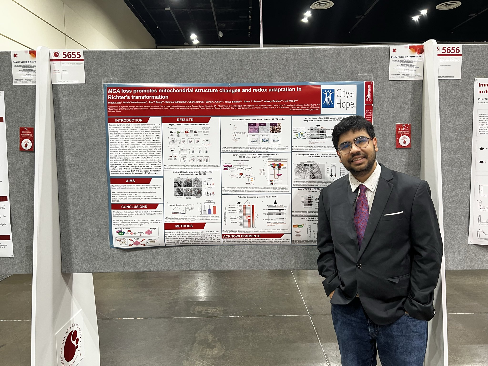
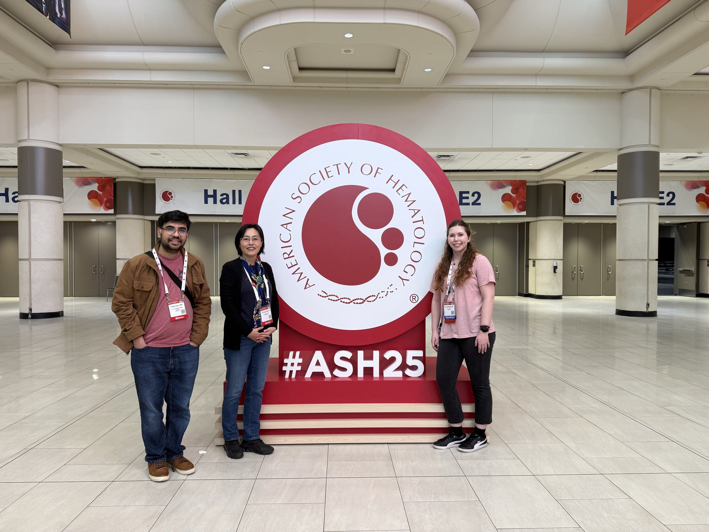

DEC 2025
ASH 2025, Orlando, FL — The Wang Lab attended the American Society of Hematology (ASH) Annual Meeting & Exposition held in Orlando, Florida.




ASH 2025, Orlando, FL — The Wang Lab attended the American Society of Hematology (ASH) Annual Meeting & Exposition held in Orlando, Florida.
Lili Wang Lab has officially relocated to Columbia University Medical Center in New York City. We are excited to start this new chapter!
See our X account for more updates: https://twitter.com/LiliWangLab